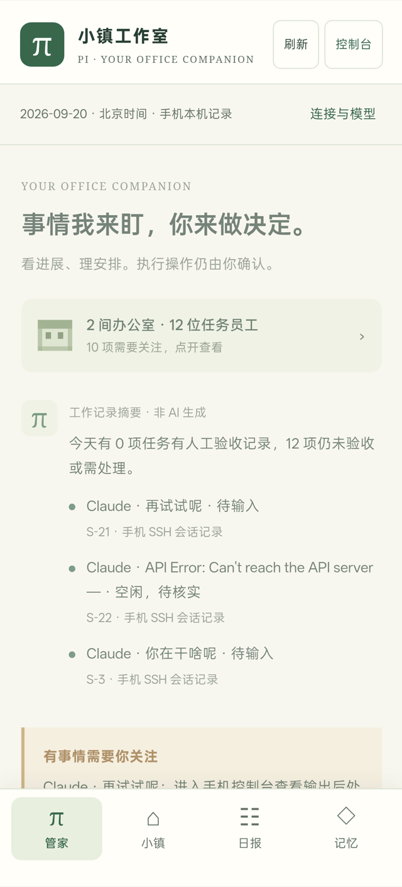
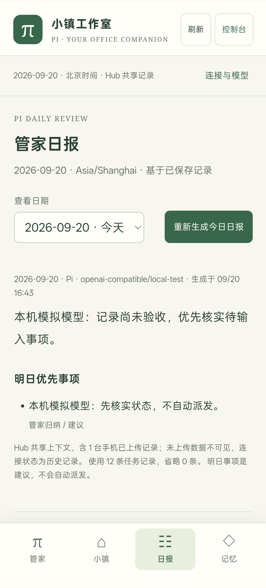

agentBridge Android 应用
在手机上连自己的机器，查看并回复上面正在跑的 Claude Code / Codex 会话。
首次安装会被系统拦一次，需要在设置里允许「安装未知来源应用」。
用法
装完打开，用「发现机器」扫描局域网，或者填 SSH 地址和账号（密码或私钥）。
它走你机器上现有的 SSH，被连的机器不需要装 agentBridge。
如果你已经在跑 agentBridge 服务，App 也能连上去，跟网页端共用同一份数据。
语音输入用手机自带的识别；手机没有识别器时，录音发到你自己的 agentBridge 服务转写。


应用没有统计和上报，所有连接地址都是你自己填的。
APK 由本仓库的 CI 从 android-v* 标签构建，用固定的发布密钥签名。构建日志在 Actions 里，也可以对照源码自行构建。